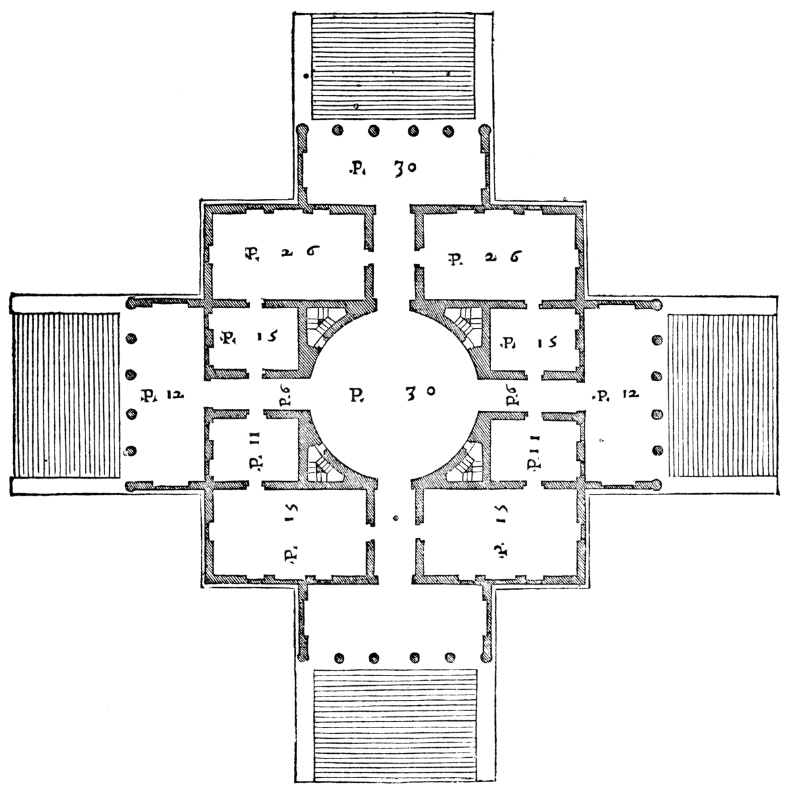

Next: Contents
Contents
Index
The Palladio Component Model

Ralf Reussner, Steffen Becker, Jens Happe,
Heiko Koziolek, Klaus Krogmann, Michael Kuperberg
Chair for Software Design & Quality (SDQ)
University of Karlsruhe (TH), Germany
reussner@ipd.uka.de
sbecker@ipd.uka.de
happe@ipd.uka.de
koziolek@ipd.uka.de
krogmann@ipd.uka.de
mkuper@ipd.uka.de
March 16, 2007
Snowball
2007-03-16